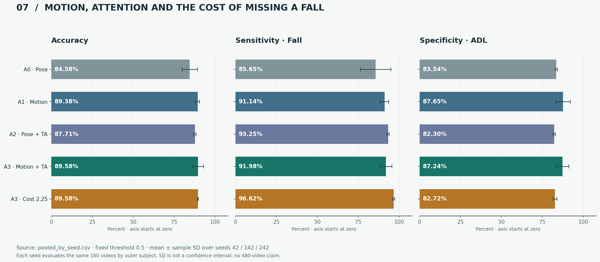
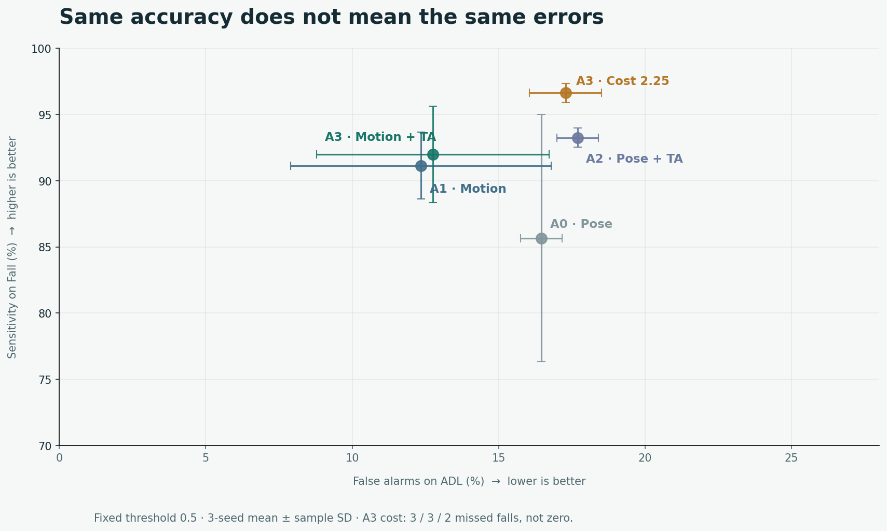

NGHIÊN CỨU 07 · FULL RUN ĐÃ HOÀN TẤT · 30/09/2026
ME-STGCN-TA: thêm thành phần nào, đổi lại điều gì?
160 video, 4 người, đánh giá nested leave-one-subject-out; 3 seed (42, 142, 242), tối đa 50 epoch với early stopping. Có 64 lượt outer training, 192 dòng đánh giá fold và 7.680 dự đoán gồm các mô hình/chính sách. Đây không phải 7.680 video khác nhau.
Web vẫn dùng checkpoint final 06. Trang này trình bày thí nghiệm 07; chưa thay weights, ngưỡng hoặc preprocessing của web. Điểm tốt trên tập nhỏ không chứng minh an toàn y tế, khái quát mọi người hoặc khả năng cảnh báo realtime.
Đối chứng cùng cách chia và seed
Chính sách fixed, ngưỡng 0,5: không chọn lại ngưỡng bằng outer test. Accuracy là trung bình ± độ lệch chuẩn mẫu của 3 seed; Recall và Specificity là trung bình 3 seed. Cột FN/FP theo thứ tự seed 42 / 142 / 242.
| Biến thể | Accuracy (%) | Recall Fall (%) | Specificity (%) | FN | FP |
|---|---|---|---|---|---|
| A0 · skeleton | 84,58 ± 4,73 | 85,65 | 83,54 | 3 / 17 / 14 | 13 / 13 / 14 |
| A1 · thêm motion | 89,38 ± 1,08 | 91,14 | 87,65 | 9 / 5 / 7 | 6 / 13 / 11 |
| A2 · thêm attention | 87,71 ± 0,72 | 93,25 | 82,30 | 5 / 5 / 6 | 14 / 14 / 15 |
| A3 · motion + attention | 89,58 ± 3,44 | 91,98 | 87,24 | 3 / 8 / 8 | 8 / 9 / 14 |
| A3 · tăng trọng số Fall | 89,58 ± 0,36 | 96,62 | 82,72 | 3 / 3 / 2 | 13 / 14 / 15 |

Ưu tiên ít bỏ sót — nhưng không bỏ qua báo nhầm

- Tăng trọng số Fall cho Recall trung bình 96,62%, không phải Accuracy 95%; vẫn bỏ sót 2–3 clip Fall mỗi seed và báo nhầm 13–15 clip ADL.
S4_FALL_05bị bỏ sót ở cả 3 seed của A3 cost. Ưu tiên xem lại video, chất lượng pose và nhãn trước khi tăng epoch.- Temporal attention không cải thiện mọi metric ở mọi seed. Không chọn seed đẹp nhất hoặc sửa ngưỡng theo outer test để báo cáo thành tích.
- Người trong test được tách khỏi người trong train/validation. Tuy vậy chỉ có 4 người: cần dữ liệu độc lập về đối tượng, camera và bối cảnh.
Chưa thể kết luận gì?
Kết quả 06 là dự đoán outer-fold (Accuracy 87,5%; Recall 79/79; Specificity 61/81), không phải kiểm định độc lập checkpoint final được train trên toàn bộ 160 video. Không gộp bảng 06 và 07 thành một phép so sánh kiểm soát.
Mô hình được học theo toàn clip. Cửa sổ trượt trên web là thử nghiệm; cần nhãn sự kiện theo thời gian, dữ liệu ADL dài và đánh giá độ trễ/báo nhầm theo giờ trước khi gọi là cảnh báo realtime đáng tin cậy.
Nguồn đầy đủ trong repo: results/notebook_07/, notebook 07, báo cáo phương pháp và docs/next-training.md. Không có model 08 tự chạy hoặc thay model web ngầm.